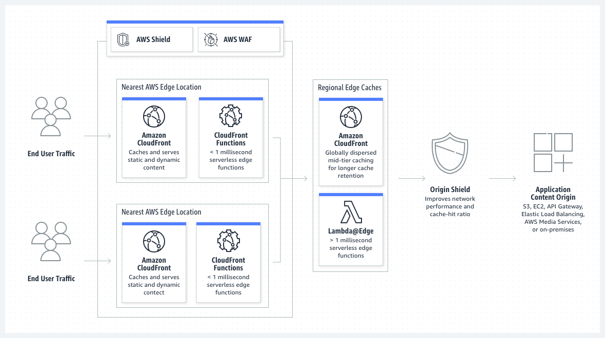

Beschreibung
Amazon CloudFront ist ein Content Delivery Network (CDN) von Amazon Web Services (AWS) und spielt eine entscheidende Rolle bei der Beschleunigung der Bereitstellung von Inhalten weltweit.
Durch das Verteilen von Kopien von statischem Inhalt wie Bildern und Videos in sogenannten Edge Locations auf der ganzen Welt verbessert CloudFront die Ladezeiten erheblich.
Diese Edge Locations sind Serverstandorte, die sich geografisch verteilen und es den Benutzern ermöglichen, Inhalte von einem nahegelegenen Server zu beziehen. Ein herausragendes Merkmal von CloudFront ist seine nahtlose Integration mit anderen AWS-Diensten. Dies ermöglicht eine effiziente Zusammenarbeit und Nutzung von Synergien innerhalb der AWS-Infrastruktur. Zudem bietet CloudFront die Flexibilität, nicht nur statischen, sondern auch dynamischen Inhalt schnell und effizient bereitzustellen.
Als globaler CDN-Dienst beschleunigt Amazon CloudFront die Auslieferung von Websites, APIs und Videoinhalten für Kunden weltweit. Das globale Netzwerk von Edge-Standorten ermöglicht es, zwischengespeicherte Kopien von Webinhalten wie Videos, Webseiten und Bildern in unmittelbarer Nähe der Endbenutzer zu speichern.
Dadurch wird nicht nur die Geschwindigkeit der Inhaltsbereitstellung optimiert, sondern auch die Belastung der Ursprungsserver reduziert. Zusammenfassend lässt sich sagen, dass CloudFront nicht nur die Ladezeiten verkürzt, sondern auch eine effiziente und skalierbare Lösung für die Auslieferung von Inhalten bietet.
* Edge Locations: CloudFront verteilt Kopien von statischen Inhalten wie Bildern und Videos in Edge Locations auf der ganzen Welt. Diese Edge Locations sind geografisch verteilte Serverstandorte, die es den Benutzern ermöglichen, Inhalte von einem nahegelegenen Server abzurufen. Dies reduziert die Latenzzeiten erheblich und verbessert die Benutzererfahrung.
* Integration mit anderen AWS-Diensten: CloudFront ist nahtlos in die gesamte AWS-Infrastruktur integriert. Dadurch können Kunden von einer effizienten Zusammenarbeit und Nutzung von Synergien zwischen verschiedenen AWS-Diensten profitieren.
* Bereitstellung von statischem und dynamischem Inhalt: CloudFront bietet die Flexibilität, nicht nur statische, sondern auch dynamische Inhalte schnell und effizient bereitzustellen. Dies ermöglicht eine optimale Leistung für verschiedene Arten von Webanwendungen und Inhalten.
* Globales Netzwerk von Edge-Standorten: CloudFront verfügt über ein globales Netzwerk von Edge-Standorten, die zwischengespeicherte Kopien von Webinhalten wie Videos, Webseiten und Bildern in unmittelbarer Nähe der Endbenutzer speichern. Dadurch wird die Geschwindigkeit der Inhaltsbereitstellung optimiert und die Belastung der Ursprungsserver reduziert.
* Effiziente und skalierbare Lösung: CloudFront bietet eine effiziente und skalierbare Lösung für die Auslieferung von Inhalten weltweit. Durch die Nutzung der leistungsstarken Infrastruktur von AWS können Kunden ihre Inhalte schnell und zuverlässig bereitstellen, unabhängig von der geografischen Lage ihrer Benutzer.
Schlüsselwörter
> > > Schlüsselworte bzw. Schlagworte sollen uns dabei helfen, einen Service leichter zu erkennen, wenn es um Prüfungsfragen geht. Ließ dir die Fragen richtig durch und achte auf folgende Schlüsselworte. Sie können dir bei der Beantwortung der Fragen helfen.
- Container-Orchestrierung: ECS ermöglicht daren von Docker-Containern in der AWS-Cloud.
- Container-Definitionen: Definition von Containber die Verwendung von Aufgaben (Tasks) und Services.
- Docker-Integration: ECS unterstützt Docker-Container und ermöng von Docker-Images.
- Task-Definitionen: Spezifikationen, wie eine Aufgabe (Task) in einvon Services, um langfristig laufende Anwendungetartet und Aufgaben ausgeführt werden.
- Auto Scaling: Automatische Anpassung der Anzahl von las basieinierbaren Metriken.
- Load Balancing: Integration mit dem Elastic Load Balancing-Dienst für die Lr.
- AWS Fargate: Option zur Ausführung von Containern ohne die Notwendigkeit, EC2.
- Integration mit Amazon ECR: Nahtlose Integration mit d
Grafische Erklärung
Prüfung Fragen
- Welche der AWS-Services haben einen globalen Umfang?
- Ein Unternehmen hat eine statische Website, die in einem S3-Bucket in einer AWS-Region in Asien gehostet wird. Obwohl sich die meisten seiner Benutzer in Asien befinden, möchte es nun sein Wachstum weltweit vorantreiben. Wie kann es die globale Leistung seiner statischen Website verbessern?
- AWS Shield Advanced bietet erweiterten DDoS-Angriffsschutz für Webanwendungen, die auf welchen der folgenden Ressourcen laufen?